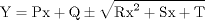

| 3.11. The General Conic (GCONIC) Definitions | ||
|---|---|---|
 | Chapter 3. Geometric Statements in APT |  |
| 3.11. The General Conic (GCONIC) Definitions | ||
|---|---|---|
| | Chapter 3. Geometric Statements in APT | |
The general conic is the plane curve represented by the general class of second-degree equations in two variables:
Ax2 + Bxy + Cy2 + Dx + Ey + F = 0
SGC = GCONIC/ P, Q, R, S, T
Where the alternate equation is defined as follows:

| |  | |
| 3.10. The Cone (CONE) Definitions |  | 3.12. The Loft Conic (LCONIC) Definitions |